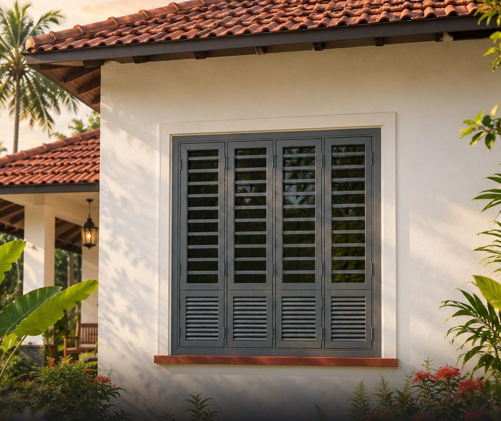
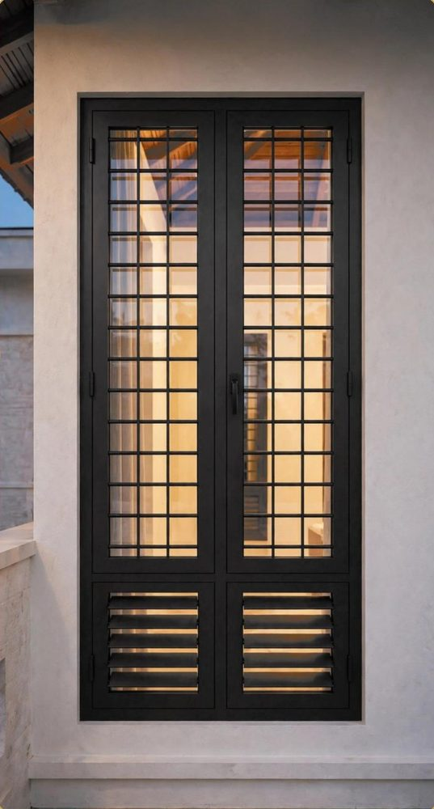
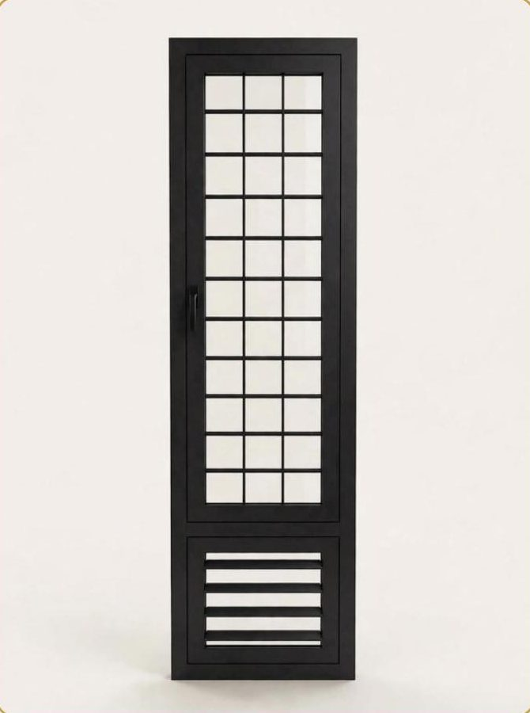
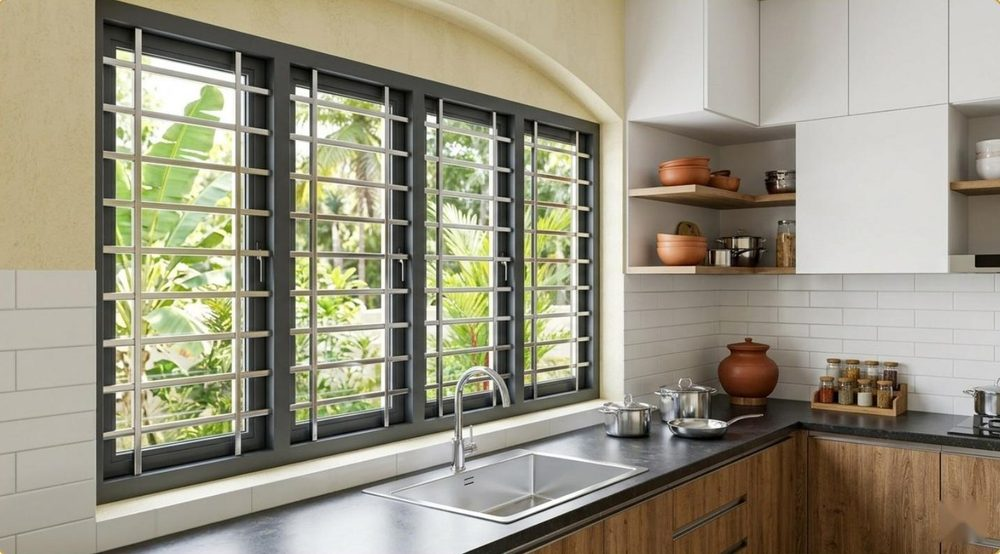
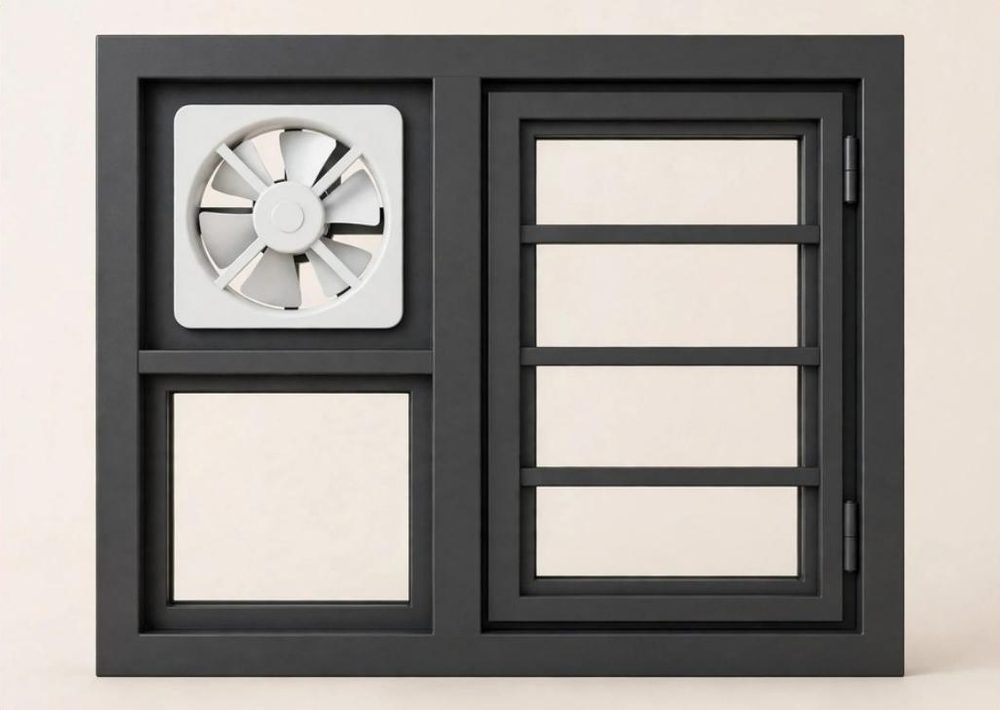
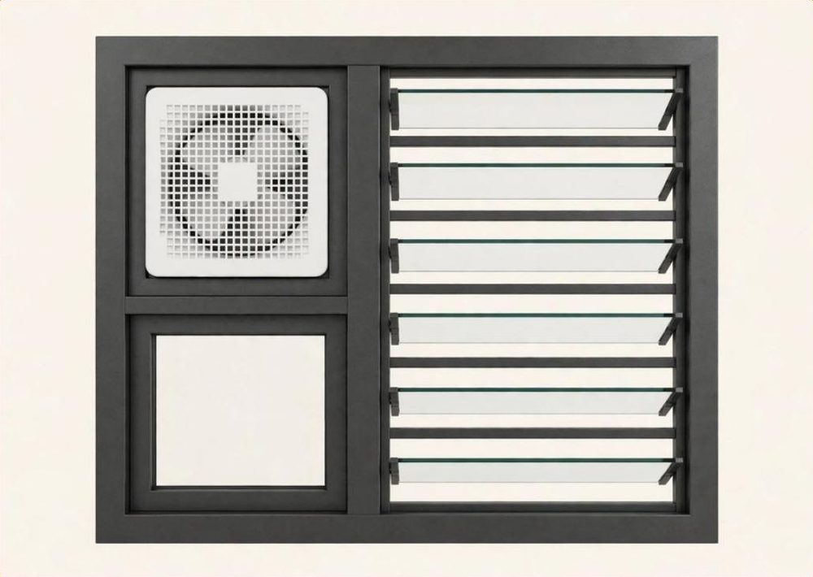
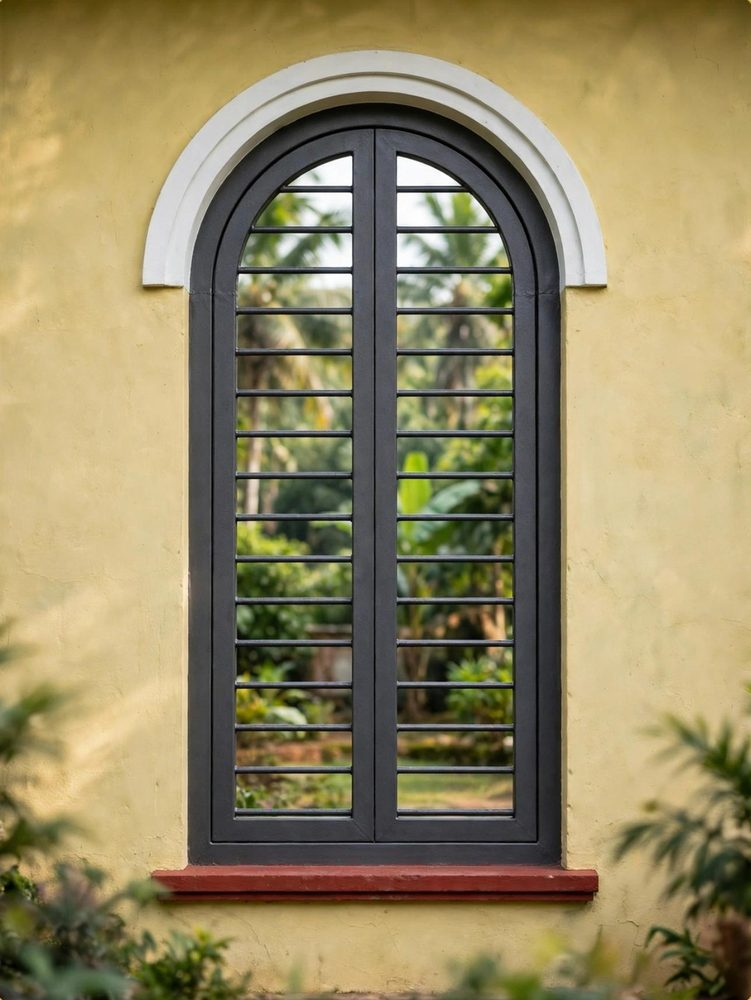
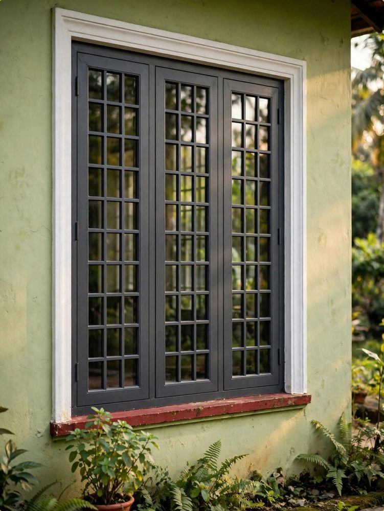
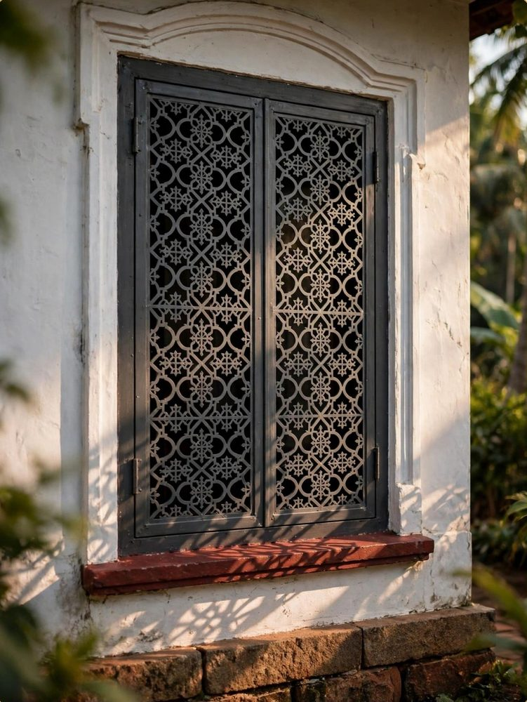
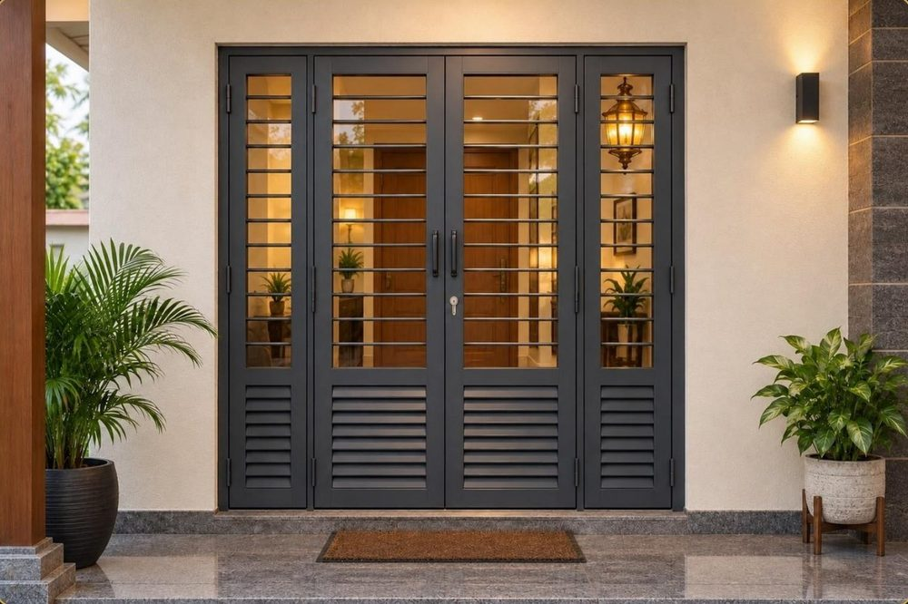

Steel windows made to your measure
Termite-proof steel windows and grill doors, built to the exact size of your opening in our own production and supplied from Thengapattanam.

Why choose RIDGE steel windows
Made to measure
Built to the exact size of your opening, from one pali to a full wall.
Termite-proof steel
Steel sections do not feed termites and do not rot.
Epoxy primer coated
Every window is supplied epoxy primer coated, ready for your finish.
Strength you choose
Two sheet gauges and three profile sizes to match your opening and budget.
Six choices for every window
Pick one from each. Everything combines freely.
| Sheet gauge | 16G (1.5 mm), heavy duty, for large openings, ground-floor and high-exposure windows. 18G (1.2 mm), standard, for everyday windows |
| Profile size | 3 × 2 in (76 × 51 mm), economy windows and small openings. 4 × 2.5 in (102 × 64 mm), standard windows and frames. 4 × 3 in (102 × 76 mm), large windows and heavy-duty frames |
| Pali | 1, 2, 3, 4 or more. One pali is about 50 cm of width |
| Grill type | 8 options, G1 to G8, in mild and stainless steel |
| Shutter design | Plain, arch, louver, check or CNC |
| Partitions | Frame partition (a fixed panel above the shutters) or shutter partition (a divider rail inside each shutter) |
A pali is one shutter division of the frame. One pali is about 50 cm of width, so 1 pali is 50 cm, 2 pali 100 cm, 3 pali 150 cm and 4 pali 200 cm.
Window types
Standard sizes are a guide. Any size is made to order.

Normal windows
Classic hinged windows for rooms and halls. Shown with a G1 grill.
Ask for a quote
French windows
Floor-length windows, 180 cm high. Shown in the louver divider layout (RF-D).
Ask for a quote
Single-leaf French window
RF1-D: one shutter with a louver divider.
Ask for a quote
Kitchen windows
Compact windows, 100 cm high. Shown with a G7 stainless grill.
Ask for a quote
Fan ventilator, casement
RVF-C: a fan opening and fixed glass beside a casement shutter. Fan and glass not included.
Ask for a quote
Fan ventilator, glass louver
RVF-L: a fan opening and fixed glass beside a glass louver. Fan and glass not included.
Ask for a quote| Type | Codes | Standard sizes |
|---|---|---|
| Normal windows | RN1, RN2, RN3, RN4 | 1 to 4 pali, 50, 100, 150 or 200 cm wide. Heights 135, 140 or 150 cm |
| French windows | RF1, RF2, RF3 | 1 to 3 pali, 50, 100 or 150 cm wide. Height 180 cm |
| Kitchen windows | RK1, RK2, RK3 | 50 × 100, 100 × 100 or 150 × 100 cm (width × height) |
| Ventilators | RV1, RV2 | 60 × 40 or 70 × 50 cm (width × height). Louver or casement opening. Round fan cut-out on request |
| Fan ventilators | RVF-C, RVF-L | Casement or glass louver beside the fan opening |
Shutter designs
Plain, louver and arch shutters are available, along with the check and CNC designs below.

Arch design
Arch-top shutters in round, ogee or step styles (A1, A2, A3).
Ask for a quote
Check design
A grid of small panes in every shutter.
Ask for a quote
CNC design
Laser-cut pattern panels, on request and subject to design and lead time.
Ask for a quoteGrill types
Eight options. Quote the code, G1 to G8, when you order. They combine with any shutter design.
| Code | Type | Material |
|---|---|---|
| G1 | MS flat and round (patta kambi) | Mild steel |
| G2 | Square tube 20 mm | GP, 20 × 20 mm |
| G3 | Square tube 25 mm | GP, 25 × 25 mm |
| G4 | Polished square rod | Mild steel, 12 mm |
| G5 | Square rod | Mild steel, 16 mm |
| G6 | Round rod | Mild steel, 12 mm |
| G7 | SS flat and round | Stainless steel |
| G8 | SS square tube | 304 stainless, 20 mm |
Grill doors
Made to the size of your opening.

Shown: double-leaf door with side panels.
| Frame | 5 × 2.5 in section |
| Opening | Inside or outside open |
| Grill | Any type, G1 to G8 |
| Size | Made to your opening |
| Layout | Double leaf, single leaf, with or without side panels |
Optional accessories
Available on request, in addition to standard fittings.
- Auto-closer lock: closes and latches the shutter automatically
- Multi stopper: holds the shutter open at the angle you choose
- Window stopper: stops the shutter swinging in the wind
- Pin hinges: heavy-duty hinges for large or heavy shutters
- Highmax hinges: smooth opening that holds the shutter at any angle
- Tower bolt: a simple extra bolt for the shutter
How to order
- Measure. Note the width and height of the opening in cm or inches.
- Choose. Pick gauge, profile, pali, grill, shutter design and partitions.
- Quote. We send a quotation for your exact window.
- Make. Your windows are built to size in our production.
- Fit. Installed by your mason or contractor. RIDGE installation is available at extra charge.
Good to know
- Measure the bare opening and check three places for both width and height.
- Price depends on size, gauge, profile and grill. Quotation on request.
- Standard sizes are a guide. Any size can be made to order.
- Glass is not included in our supply.
- Send a photo of the opening on WhatsApp for a quicker quote.
- Site visit and exact measurement available on request.
- Windows are supplied epoxy primer coated. Photos may show painted finishes for illustration.
Images are for illustration. We also supply UPVC windows; ask us on WhatsApp.
Let us build your windows
Send the width and height of your opening, or a photo of it, and we will quote.
Chat on WhatsApp